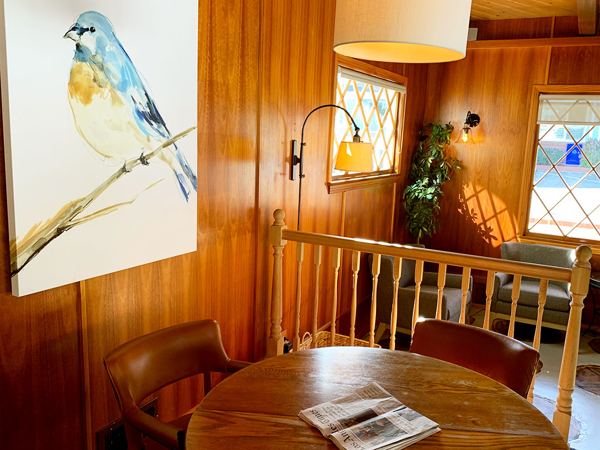

1 / 11

Since its establishment in 1889, the Paso Robles Inn has prided itself in rooting itself in the city’s heritage. Being founded at the same time as Paso Robles, the hotel became an integral part of the history of the Central Coast wine country. | Paso Robles Inn, Paso Robles, CA | February 8, 2020
2 / 11

From this picture, you might think that the hotel a place to go to relax and enjoy the beautiful weather that wine country has to offer, but the Paso Robles Inn has a dark and “haunting” past. | Paso Robles Inn, Paso Robles, CA | February 8, 2020
3 / 11

In 1940, the original building (now known as the Grand Ballroom) caught fire. According to the hotel front desk agent, Christie Ortiz (a self proclaimed believer in ghosts), the front desk agent at the time, J.H. Emsley “made the 9-1-1 call to evacuate the building.” Once the hotel was evacuated, Emsley “had a heart attack and later died at the hospital.” He must have loved his job though because guests can see him roaming the property to this day.| Paso Robles Inn, Paso Robles, CA | February 8, 2020
4 / 11

After walking into the Grand Ballroom, guests see famous Polish composer and Prime Minister, Ignacy Jan Paderewski’s piano. At the peak of his fame, Paderewski settled on a 2000-acre piece of land in Paso Robles which now is home to one of the most famous wineries between San Francisco and Los Angeles. The piano was donated to the hotel in 2013.| Paso Robles Inn, Paso Robles, CA | February 8, 2020
5 / 11

Aside from Emsley, the main building houses a few other haunts. According to Ortiz, those who stay in the original building “have reported multiple sightings of the same spirit. “When guests walk up these stairs, they are in for an eerie feeling,” Ortiz said.| Paso Robles Inn, Paso Robles, CA | February 8, 2020
6 / 11
After making their way upstairs, and walking down a “spooky looking” hallway, guests staying in room 1211 are likely to have a run in with “a little girl running down the hallway and playing marbles at the end of it,” according to the hotel’s Head of Housekeeping, Natalie Medina. “Guests have said that she runs from room 1209 to the end of the hallway toward 1211,” Medina said. “It’s my favorite room in the hotel and I always suggest to my friends to stay in it because it is so cool.”| Paso Robles Inn, Paso Robles, CA | February 8, 2020
7 / 11

According to Medina, “guests have seen things move and they hear noises in the walls.” The room features a king bed and a big, soaking bathtub - perfect for those couples looking to have a romantic evening and potentially a little girl snuggle up in between them while they are sleeping.| Paso Robles Inn, Paso Robles, CA | February 8, 2020
8 / 11

Cambria’s Bluebird Inn was originally built in 1880 by George Lull as a gift to his second wife Mary. According to the hotel’s owner, Kiran Patel, the hotel’s previous owners reported multiple sightings of Mary in the second story of the hotel’s main lobby. “We’ve been here almost 5 year and we haven’t seen her,” Patel said. | Bluebird Inn, Cambria, CA | February 8, 2020
9 / 11
Despite being haunted, the Bluebird Inn is a warm and welcoming hotel. According to Patel, he tries to make the hotel “as welcoming as possible” because he has had guest who have cancelled reservations after claiming that they heard the hotel was haunted. | Bluebird Inn, Cambria, CA | February 8, 2020
10 / 11
According to the front desk agent, Kylee Delgadillo, guests have reported to have seen Mary through the window of the second story as well. Delgadillo also shared a spooky story that the previous owner’s son shared with her. “Eric told me that when he was six-years-old he had trouble sleeping and his mother came in and read to him to help him fall asleep again. In the morning he got to the breakfast table and told her thank you for reading to him and she claimed that it wasn’t her, it was Mary,” Delgadillo said. | Bluebird Inn, Cambria, CA | February 8, 2020
11 / 11

According to Patel, hotel “guests have also spotted Mary in the parking lot and walking up the stairs of the buildings on the outskirts of the property. However, she doesn’t appear to disturb anyone and she acts more motherly. “She’s a happy ghost,” Patel said, “We don’t mind if she does roam around.” | Bluebird Inn, Cambria, CA | February 8, 2020